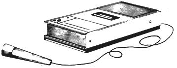

I have recently discovered, to my delight, that a broadcast journalist can make it on his own as a freelancer. In fact, I'm now making my living this way and I'm going to tell you how I do it. I want to emphasize right in front, however, that this article is written for folks who already have some grounding in news reporting. If your experience in communications is limited to a few months of tearing copy off a teletype or to working as a copy boy or advertising salesman, you may not have the preparation needed for this freelance journalism.
Alright, news reporters. Now that we've sorted ourselves out, I'll lay down two ground rules: (1) The following instructions are not meant to tell you how to rake in so much money in three months that you can take it easy the rest of the year. Rather, I'm going to show you a way to get out from under a boss . . . or to survive when you're without a job. (2) Remember that I work in radio news. Your field might be TV or newspapers. In either of the latter cases, you'll want to think "photographs" when I say "audio tape". Alright . . . here we go.
I became a radio "stringer" quite suddenly when I found myself without a job just one week before the legislature of my state convened. I didn't want to leave the area and I didn't like the idea of collecting unemployment compensation . . . so I got on the phone to a number of radio stations.
I did not confine myself to stations located in my state. I also contacted broadcast studios just over the border . . . studios which might logically want to use coverage of major events within my state. I was fortunate in that there are three all-news stations in just such ideal positions. I called each of the three and offered to serve as their stringer at the capitol . . . with telephoned reports of the action there.
The stations I called were (a) located in cities large enough to give them competition from other broadcasters, thus forcing them to offer "exclusives" and (b) known for having fairly active news departments.
Two key points: I guaranteed market exclusivity (I would take on only one station per city) and I would charge a station only for the stories it accepted. In fact, no one was committed to take any of my reports at all. Generally, the larger stations thought my quoted price of $2.00 per accepted story was dirt cheap . . . and the smaller broadcasters thought it was reasonable enough. The only exception was an all-news station owned by a major network: It had an established practice of paying ten dollars per report.
In three days of calling, I 'signed up' five stations. No written contract was drawn. I simply sent each accepting radio station a letter that put in writing what I had offered on the phone. The letters also included my home address, home phone and capitol phone.
Most state capitol buildings have press rooms. In my case, there were two: A crowded, noisy one housing newspaper reporters and a quiet room for broadcasters tucked away on the fifth floor. The executive director of the Legislative Management Committee (ask around to learn whom you must see) set me up with a desk in the broadcasters' room and I ordered a phone.
Since I had been paying my home telephone bill on time, I did not have to make the $75.00 deposit usually required on new business phones. I already owned a cassette tape recorder and I bought several new blank cassettes and a set of batteries for it. I also wound an induction coil with which to feed taped audio into the phone (instructions later). A ream of cheap paper and some file folders, and I was set to go.
In my state, the Governor has a brief, informal news conference at 9:30 each morning. I make it a point to scan the morning paper before I go in and I always get to the conference just before it begins. Usually, the Governor doesn't have much to announce at these gatherings and the sessions are taken up with questions from the dozen or so reporters who attend regularly. I'm quite fortunate in that the Governor permits cassette recorders to operate during the meetings: His predecessor did not.
After the morning conference I stop by the main press room to pick up any mail (mostly releases from political parties and various state agencies) and then go on up to my desk on the fifth floor.
There is usually material for one or two stories in each news conference. I write them up, select appropriate cuts of 10 to 30 seconds from the tape and start calling my stations.
Rarely does every station buy any given story. Some want local angles and two all-news stations have union contracts which prevent me from feeding them tape. For these two outlets I prepare special straight-voice reports that run a little longer than the stories I give the other studios.
All these reporting calls are made collect and the receptionists, who recognize my name, accept promptly. I quickly outline the content and length of the story or stories I have and each station's newsroom people decide on the spot whether or not they want my offering. If they do, they roll their tape and I feed.
With the morning submissions out of the way, the rest of my day consists of attending legislative committee hearings, catching legislators in the halls or in their offices for short interviews and running back to write up and feed any stories that result.
Naturally, this arrangement works best when the legislature is in session and the volume of news is highest. Still-even when the legislature is in recess or on vacation-there's a functioning government to report on and-based in a capitol city-you should have little trouble finding enough news to keep you busy and wellfed. There are potential pitfalls in this business, however, as you can easily deduce from the following list of pointers:
[1] Don't be tempted to goof off just because no one's there to keep track of your hours. Stay on the move, talk to people, stop in at various offices and get to know all the legislators and state officials.
[2] Honestly represent your stories to the stations. Your service is valuable to them only so long as you give them fast service on substantial stories that are well written and well read.
[3] Don't take sides in either political matters or personality disputes. You need to be well thought of by everyone . . . and that includes competing reporters.
[4] Be prepared to be treated as a second-class newsman for a while. As word gets around that you really are on a half-dozen stations, you'll be taken seriously. One day the publicity man for a party organization suddenly started giving me the red carpet treatment. I later learned that he had heard one of my reports on a network-owned news station the night before.
[5] Don't act self-important. Humility and a willingness to admit you don't know some things will open more doors to you than strutting around spouting call letters.
[6] Do look relatively straight. My hair is somewhat long and I have a beard . . . but I keep both trimmed and I wear a sport coat and tie.
[7] Don't grind personal axes. Spend a little extra time at hearings of the Environment Committee if you like . . . but don't become known as "the guy who's a nut on (fill in the blank)".
[8] Do keep records. The larger stations with well-established stringer systems will keep track of your feeds and pay you promptly . . . but smaller stations will need a weekly statement. Some will pay you by the week and others by the month but none will take out withholding tax; set aside money for Uncle Sam yourself.
As for technical goodies, you should have a good cassette recorder . . . not one of those $39.95 jobbies. Built-in-radio is unnecessary and you would be wise to replace the dainty little mike which usually comes with a tape recorder with a quality $20 low-impedance model. A weighted desk stand for your mike is useful for both news conferences and office interviews. Keep the recorder's heads clean and replace its batteries often. If your machine slows down in the middle of the Governor's Budget Message . . .
You can spend $12 for an induction coil to feed audio into the phone or, for two dollars, you can make your own. Wind about 80 turns of No. 22 enameled wire onto something slightly larger in diameter than the earpiece of a telephone. I found that the plastic top from a can of roach spray did very nicely! Wrap the finished coil tightly with plastic electrical tape. Solder the leads to about three feet of `coax' (single conductor with shield) and solder the other end of the coax to a male plug which will fit the output jack of your recorder. With that done, you're well equipped to enter the field of freelance radio reporting.
The advantages of my job are numerous and obvious. I work for no boss, I deal with interesting people, I cover news which is interesting and-usually-of greater importance than that which I covered from a station newsroom and I get the egosatisfaction of being heard on several radio stations.
I get paid too! My list of clients has now grown to eight and I've taken on a partner who works half time. I pay him with checks from the three most recent stations for which I string, and the two of us bill from $180 to $240 per week.
Some final thoughts: Much of what I've said here can be adapted to other situations. You may work for a small studio in a largish city . . . and be able to report local news of statewide interest to stations in other parts of the state. If you happen to live in a quiet area which suddenly becomes the locale for a major news story, you can use these same techniques to sell your coverage of the event.
And remember: six months of feeding news to a list of stations is the best possible preparation should you decide to go back on a payroll. The stations you've been stringing for will be particularly good prospective employers; they'll know you, and their listeners will be familiar with your voice and style. You'll be selling in a oneman seller's market!
|
 |
|
|